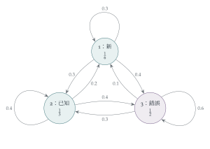

STEP III 1996，第 12 題
繼續之前，請先閱讀題目（原題為英文）。題目載於 STEP Support Programme 的題目資料庫： step.maths.org/questions/96-s3-q12
引子
Ecks 教授的定理有一個規律：她下一個證明甚麼，只取決於她上一個證明了甚麼。一個過程的未來若只取決於現在而與過去無關，就稱為馬可夫鏈（Markov chain）。馬可夫鏈無處不在：天氣模型、蛇梯棋這種圖版遊戲、DNA 模型、Google 最初的 PageRank 演算法，以至統計學家用來模擬複雜概率分佈的方法，全都用得上它。
本題要求出各類定理在長遠而言所佔的比例，即平穩分佈（stationary distribution）：長遠來說，她的定理每六個之中有一個是新而正確的，而有一半是錯的。然後題目把這條鏈在時間上倒過來運行，並問：已知今天的定理，昨天的定理是哪一類？
動筆之前
「每一行（row）之和為 \(1\)」這個條件是甚麼意思？各列（column）之和是否也是 \(1\)？
第 \(i\) 行列出的是：已知現時的類型為 \(i\)，下一個定理屬於各類型的概率；三者必有其一發生，所以每一行之和為 \(1\)。各列則不一定：第二列之和恰好是 \(1\)，但第一列之和是 \(0.6\)，第三列之和是 \(1.4\)。
逐步解題
階段 1 一步
根據全概率定律（law of total probability），以現時定理的類型 \(i\) 為條件， \[b_j = \sum_i\mathrm{P}(\text{現時 } i)\,\mathrm{P}(\text{下一個 } j \mid \text{現時 } i) = a_1p_{1j} + a_2p_{2j} + a_3p_{3j}. \qed\] 用矩陣的語言來說，行向量（row vector）\(\mathbf b = \mathbf aP\)。
階段 2 平穩分佈
我們要求 \(\mathbf a = \mathbf aP\)，且 \(a_1 + a_2 + a_3 = 1\)。把各方程寫出來。哪些最簡單？
各方程為 \[\begin{aligned} a_1 &= 0.3a_1 + 0.2a_2 + 0.1a_3, \\ a_2 &= 0.3a_1 + 0.4a_2 + 0.3a_3, \\ a_3 &= 0.4a_1 + 0.4a_2 + 0.6a_3. \end{aligned}\] （它們並非獨立：把三式相加，兩邊都得 \(a_1 + a_2 + a_3\)。）由第二式得 \(0.6a_2 = 0.3(a_1 + a_3) = 0.3(1 - a_2)\)，所以 \(a_2 = \frac13\)。由第一式得 \(7a_1 = 2a_2 + a_3 = \frac23 + a_3\)，而 \(a_1 + a_3 = \frac23\)，所以 \(8a_1 = \frac43\)，\(a_1 = \frac16\)，\(a_3 = \frac12\)： \[(a_1, a_2, a_3) = \bigl(\tfrac16, \tfrac13, \tfrac12\bigr). \qed\]
階段 3 把鏈倒過來運行
\(q_{ij} = \mathrm{P}(\text{上一個 } i \mid \text{現時 } j)\)。運用貝葉斯定理（Bayes’ theorem），上一個定理和現時的定理都採用平穩分佈。
根據貝葉斯定理， \[q_{ij} = \frac{\mathrm{P}(\text{上一個 } i)\,\mathrm{P}(\text{現時 } j \mid \text{上一個 } i)}{\mathrm{P}(\text{現時 } j)} = \frac{a_ip_{ij}}{a_j}.\] 例如 \(q_{11} = \frac{\frac16 \times 0.3}{\frac16} = 0.3\) 及 \(q_{21} = \frac{\frac13 \times 0.2}{\frac16} = 0.4\)。全部結果如下（以 \(i\) 標示行，\(j\) 標示列）： \[(q_{ij}) = \begin{pmatrix} 0.3 & 0.15 & \frac{2}{15} \\ 0.4 & 0.4 & \frac{4}{15} \\ 0.3 & 0.45 & 0.6 \end{pmatrix}. \qed\] 現在是每一列之和為 \(1\)，因為第 \(j\) 列列出的是上一個定理各種可能的類型。

回顧
以矩陣表達全概率定律。鏈每走一步，就是把一個行向量乘以矩陣 \(P\)。
平穩即特徵向量（eigenvector）。\(\mathbf a = \mathbf aP\) 說明 \(\mathbf a\) 是 \(P\) 的左特徵向量，對應的特徵值（eigenvalue）為 \(1\)。
用貝葉斯定理倒推。逆向概率構成另一個隨機矩陣（stochastic matrix），由正向的隨機矩陣和平穩分佈構造而成。
背後的數學
收斂至平衡
讓 Ecks 教授從任何一個定理開始；再證明 \(n\) 個之後，類型的分佈是 \(\mathbf a_0P^n\)。對於像這樣的一條鏈，即每種類型都可以緊接在任何一種類型之後，不論起點為何，\(P^n\) 都會收斂至一個每一行均等於平穩分佈 \((\frac16, \frac13, \frac12)\) 的矩陣。收斂的速度由 \(P\) 的其他特徵值（這裏是 \(0.2\) 和 \(0.1\)）決定，它們以幾何方式縮小：只需幾個定理之後，她的過去就被遺忘了。這個關於馬可夫鏈的遍歷定理（ergodic theorem）是大學二年級概率課程的核心結果，馬可夫鏈蒙地卡羅（Markov chain Monte Carlo）方法之所以行得通，靠的正是它：要從一個複雜的分佈中抽樣，就設計一條以該分佈為平穩分佈的馬可夫鏈，然後讓它運行一段長時間。
可逆性
逆向鏈 \((q_{ij})\) 與正向鏈 \((p_{ij})\) 並不相同：從她的定理的一份長紀錄中，你可以分辨出時間的方向。若一條鏈的逆向版本與正向版本一致，即對所有 \(i\)、\(j\) 都有 \(a_ip_{ij} = a_jp_{ji}\)，就稱為可逆（reversible）；網絡上的隨機遊走（random walk）以及處於熱平衡的物理系統的模型都屬此類。可逆性是一個威力強大的性質，因為它令平穩分佈很容易求出。
馬可夫（Andrey Markov）在 1906 年引入他的鏈，部分原因是要證明大數定律（law of large numbers）並不需要獨立性；當時他正與數學家 Pavel Nekrasov 爭論，後者聲稱獨立性是必需的。1913 年，馬可夫把他的想法應用於普希金（Pushkin）的詩體小說《葉甫蓋尼·奧涅金》（Eugene Onegin）的首 \(20\,000\) 個字母，把每個字母分為元音或輔音，並證明每個字母的類型取決於前一個字母的類型，而這種關係可用一條兩個狀態的鏈很好地描述。這是史上第一次對文本作統計分析，也是所有預測輸入系統的始祖。
思維技巧
當一個系統以固定的概率在各狀態之間轉移時，把分佈寫成向量，把轉移寫成矩陣。這樣，長遠行為就變成一個關於特徵向量的問題。
在大學裏，這樣做會把第 7 章的線性代數帶進概率論。佩龍－弗羅賓尼斯定理（Perron–Frobenius theorem）保證平穩分佈存在，而其他特徵值則量度到達平穩分佈有多快。
延伸練習
兔子窩。試做 STEP III 2003，第 13 題：在一個正方形的四個頂點上的隨機遊走，每個頂點各有一個出口，以首步方程求解。
兩步。若 Ecks 教授上一個定理是新而正確的，求再下一個定理屬於三種類型的概率。
特徵值。證明 \(P\) 的特徵值為 \(1\)、\(0.2\) 和 \(0.1\)。
可逆嗎？檢查 Ecks 教授的鏈是否滿足 \(a_ip_{ij} = a_jp_{ji}\)。答案告訴你甚麼？
延伸閱讀
James Norris, Markov Chains（Cambridge University Press）。標準的大學本科教科書。
Olle Häggström, Finite Markov Chains and Algorithmic Applications（Cambridge University Press）。篇幅短小，講馬可夫鏈蒙地卡羅尤其出色。
Brian Hayes, 「First links in the Markov chain」，American Scientist 101 (2013)。重述馬可夫對普希金作品的分析。